Version 0.1.0 Configuration and Ansible runs for services on many hosts
Pupitre
Values in layers, one static binary and one HCL file.
The console runs only the playbooks and the commands that the configuration file lists. No document of the store names a program. It is for teams that deploy services with Ansible.
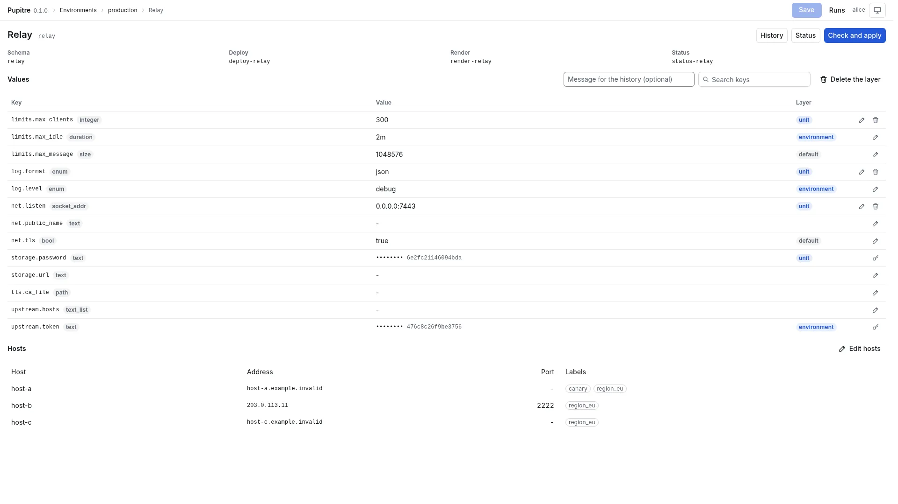
Changes that stay under control
Pupitre keeps the values of services and starts the runs. It keeps the rules in one place, and it keeps them strict.
Values in layers
A key gets its value from the schema default, the environment, the unit or the host. The last layer that gives a value wins, and the page shows which one.
A check, then an apply
A check run builds a snapshot and runs Ansible with check and diff. An apply needs a check of the same snapshot hash, used one time.
No program in the store
Only the configuration file lists the playbooks and the commands. No document names a program. A person who edits values cannot add a key.
How it works
Pupitre is one static binary. The page is inside. Only the runner node builds snapshots and starts Ansible.
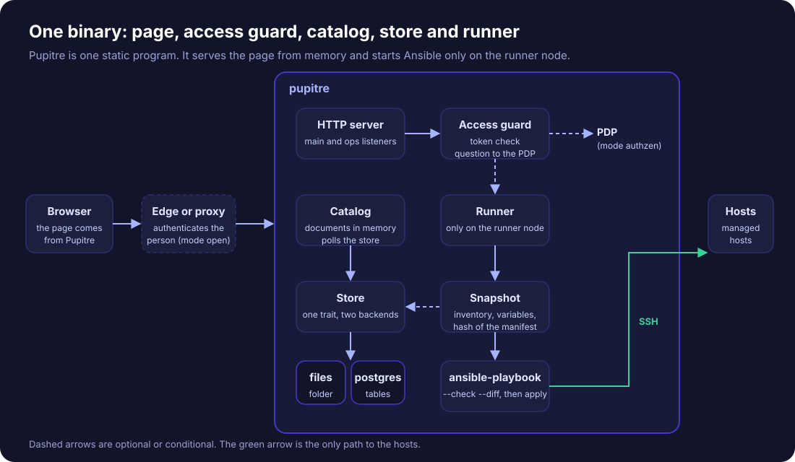
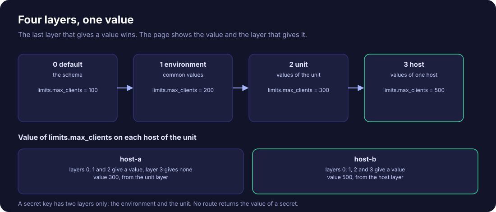
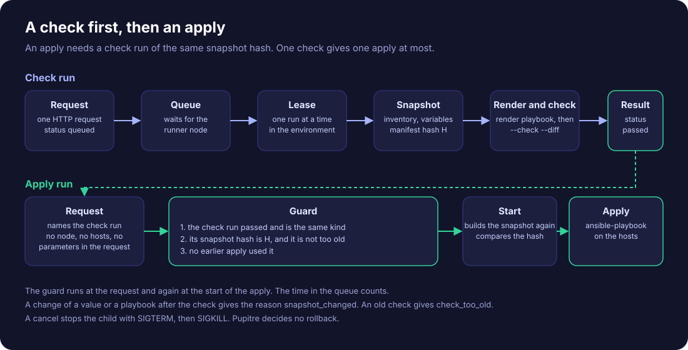
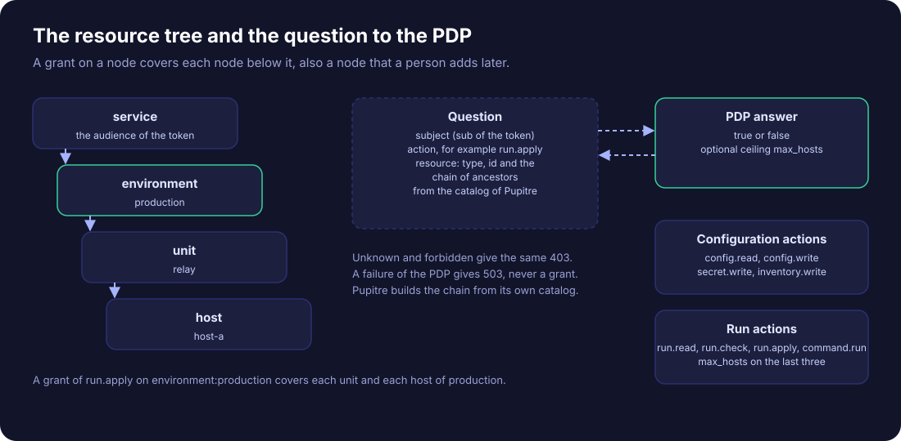
See it
Each picture comes from a live copy of the product, with synthetic data. Nothing is mocked.
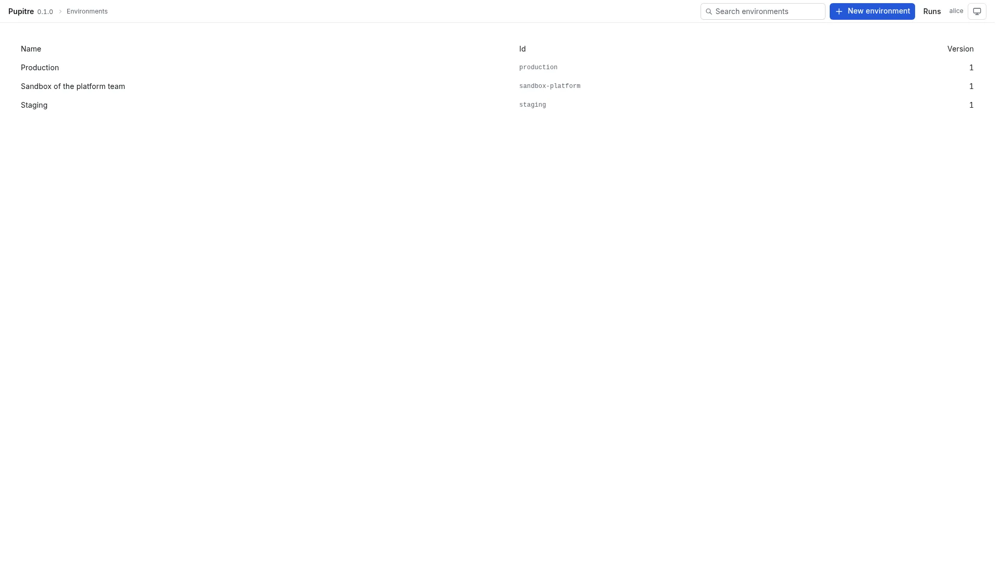
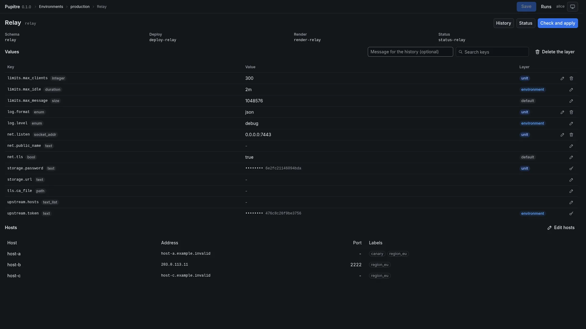
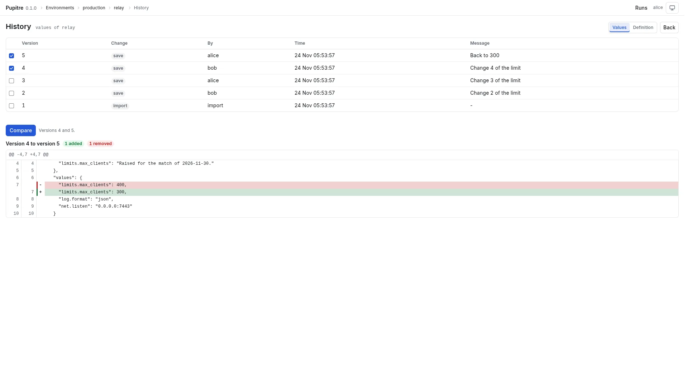
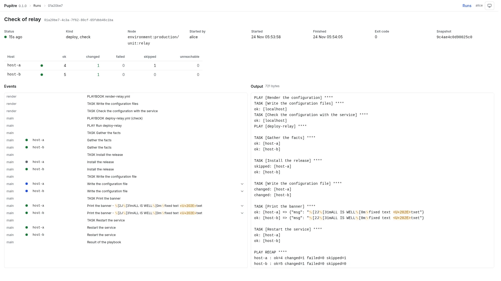
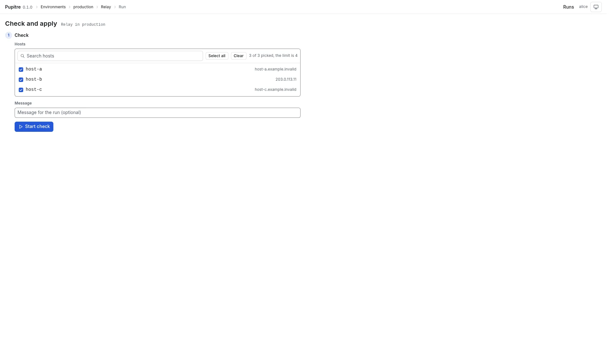
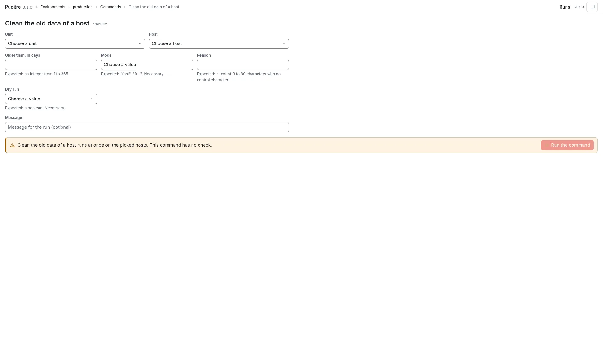
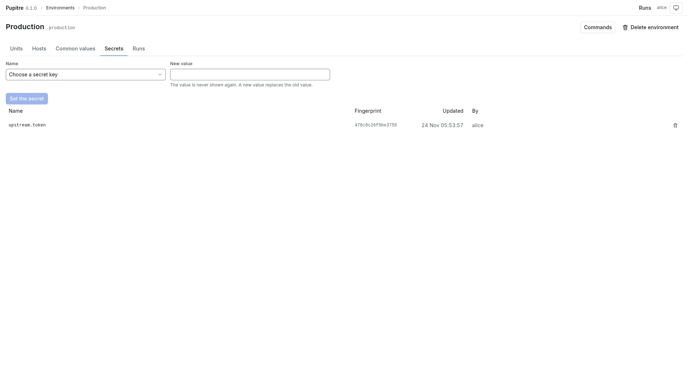
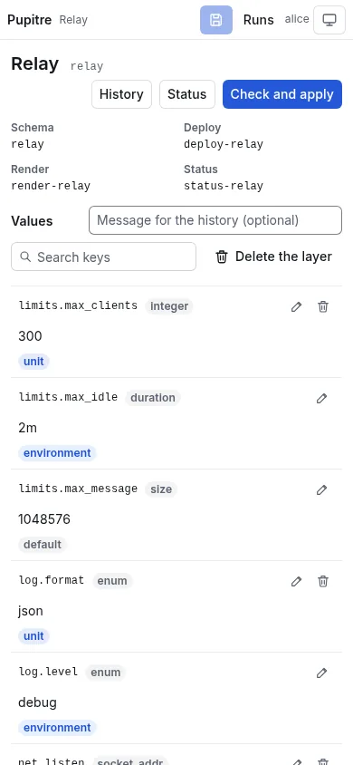
What Pupitre does
| Area | What Pupitre does |
|---|---|
| Values | Four layers: the schema default, the environment, the unit and the host. Each value has a type and a range from the schema. |
| Schemas | A schema is a file that the configuration names. It lists the keys of a unit. A person who edits values cannot add a key. |
| Runs | A check run builds a snapshot, hashes it and runs ansible-playbook with check and diff. An apply run needs a passed check of the same hash. |
| Commands | Named actions of the configuration file, with typed parameters. A person launches them by hand, on chosen hosts. |
| Secrets | Write-only values with a fingerprint. The runner gives them to a playbook as files on a tmpfs, and it scrubs the output. |
| Stores | A folder (files) with a lock and a history, or PostgreSQL. The commands export and copy-store move documents. The command import makes documents from an Ansible inventory. |
| Access | The mode authzen checks an identity token and asks a PDP. The mode open needs a proxy that signs users in. |
| Configuration | One HCL file with a closed schema. A mistake stops the start. The command print-config shows each value and its source. |
| Operation | JSON logs, Prometheus metrics, an OTLP exporter of traces and a second port for the probes. |
| Page | Plain JavaScript, HTML and CSS with no framework and no build step. No request goes to another origin. |
Try it in ten minutes
Download the archive and check it. The guide has each step, with an example of synthetic schemas and playbooks.
curl -fsSLO https://github.com/ProcurAuth/pupitre/releases/download/v0.1.0/pupitre_0.1.0_linux_amd64.tar.gz
curl -fsSLO https://github.com/ProcurAuth/pupitre/releases/download/v0.1.0/SHA256SUMS
sha256sum --check --ignore-missing SHA256SUMS
tar -xzf pupitre_0.1.0_linux_amd64.tar.gz
pupitre_0.1.0_linux_amd64/pupitre print-reference --format hcl --profile localThe ProcurAuth family
Pupitre is a program of the ProcurAuth organisation. The organisation holds the open specification and the programs that follow it. The implementations page lists them, with the results of the conformance runs.